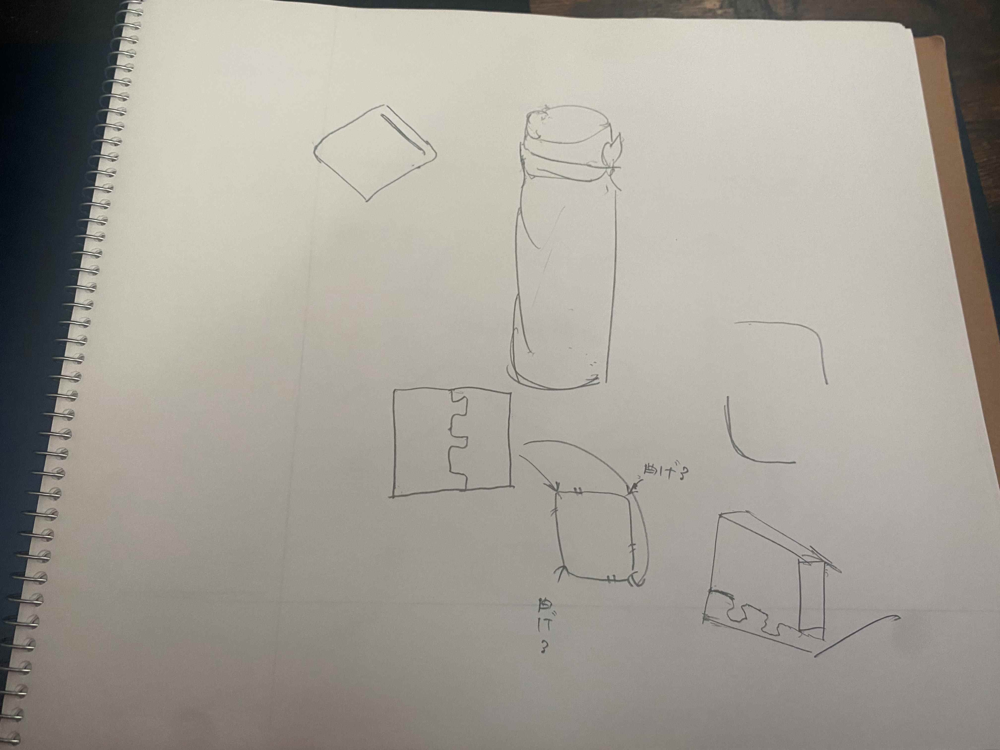
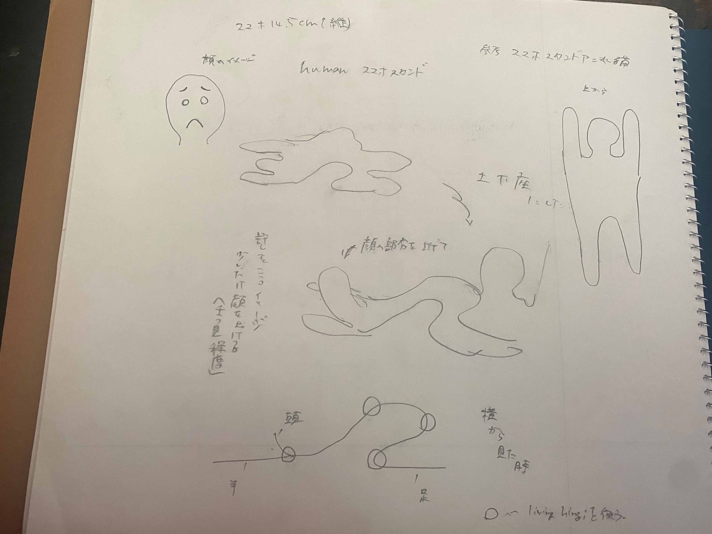
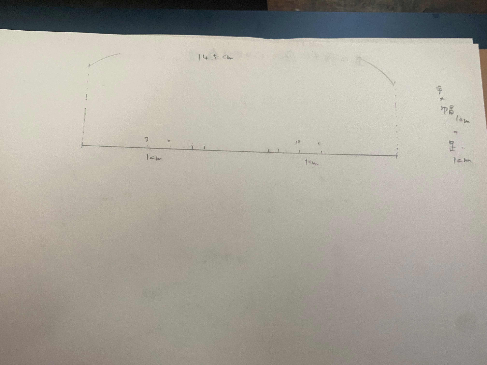
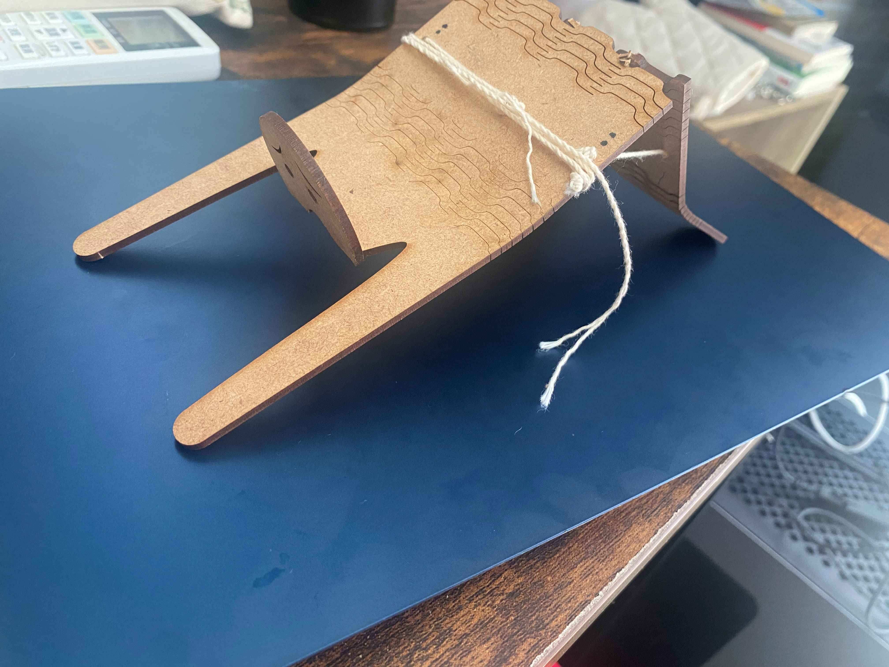
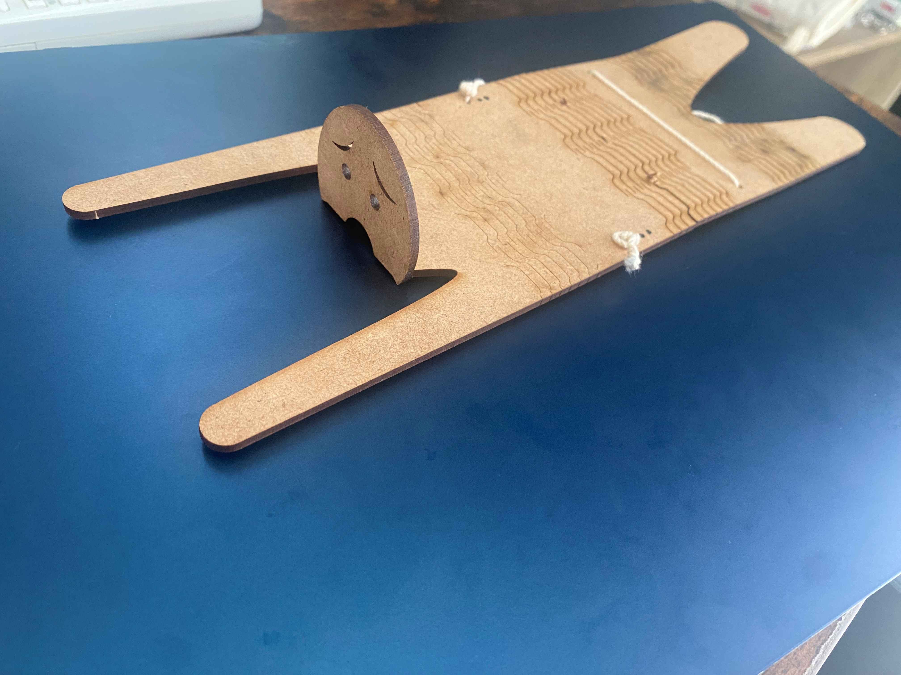
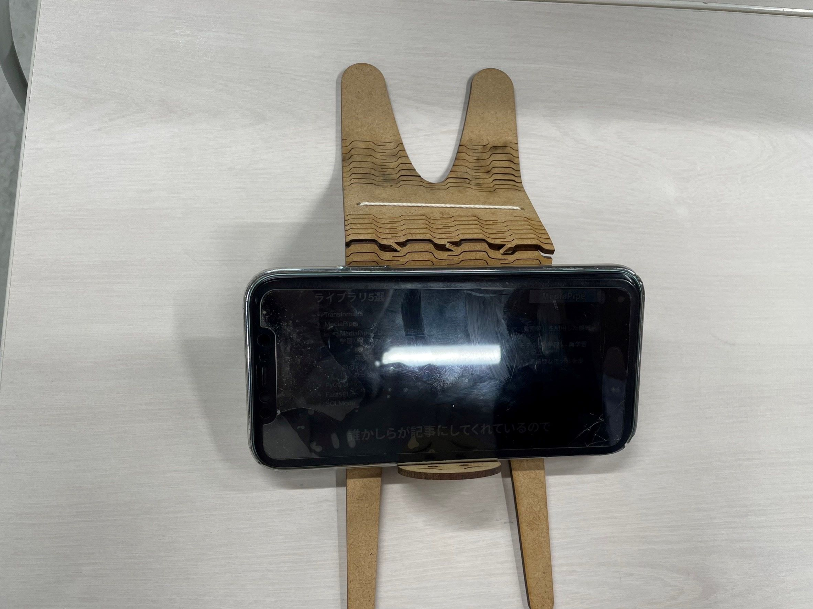
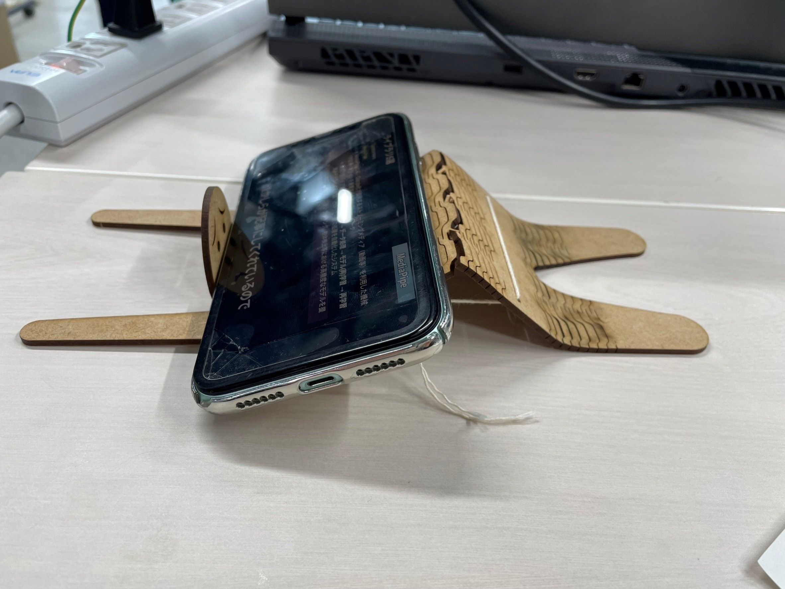
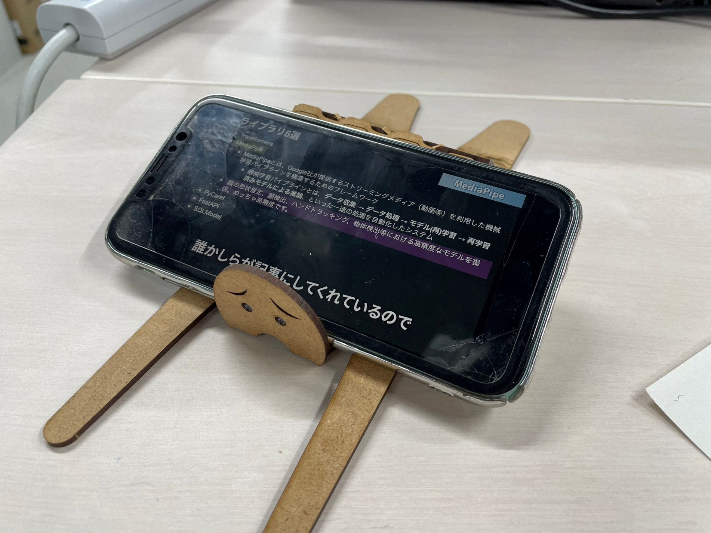
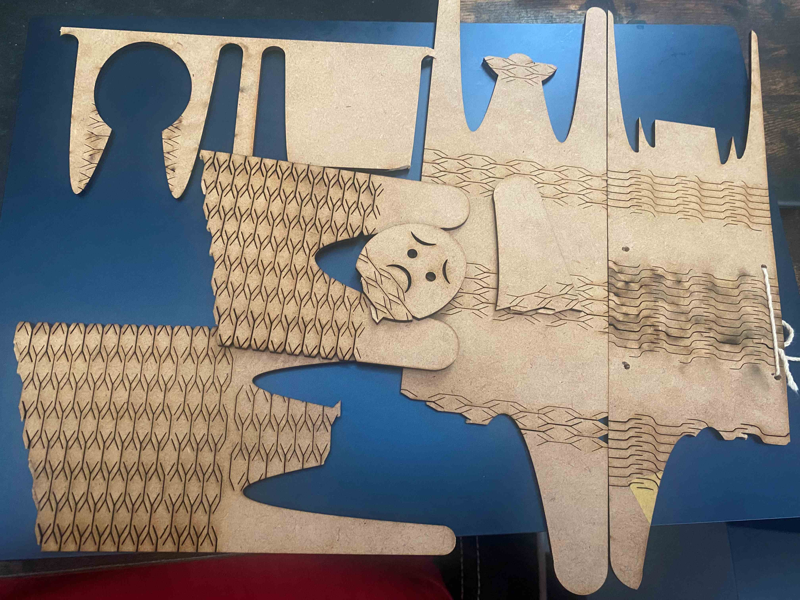

腰が弱い人間型スマホスタンド
構想１
3Dプリンターの時と同じで私はまずアイディアが浮かばずなかなか作業に取り掛かれませんでした。
家にこもって一人でずっとボーっとしながら考えたときまず浮かんだのが水筒のカバーのような者でした。

しかし、MDFの厚みなども考えると現実性がなく底が丸いのでそこをどうやって固定するかなど考えると厳しそうだったので、
断念しました。
構想２
ここで次に思いついたのがスマホスタンドでした。
普通のスタンドでは面白くない。今回のお題は人の心を動かすものなのだったので、
長考した結果至ったのが、人間の形をしたスタンドでした。

スケッチにあるように当初は土下座をした人間のスタンドを製作する予定でした。そして頭と腕の場所なども
実際にスマホを置くなどして図りました。
腰の曲がり具合を表現するために私はLiving Hingiを利用しました。
パターンサイト（webクラスに載っていた外部サイトを利用しました）
まずはサイト内にある「Cross Lattice」というものを利用しました。これは柔軟性が非常に高いという特徴があり、
自分が作ろうとしていたものは90°以上曲げる必要があったため、ぴったりだと思いました。
製作１
まず始めにfusion360で大まかな形をdxfファイルにして作りました。
dxfファイル
首の部分を曲げることで許しを請うている表現を顔の表情も合わせて表現しようとしました。
これを「Adobe Ilustrator」で取り込みHingiを入れました。
初期モデル
これが初期に作成したモデルです。体全体にHingiを入れることで柔らかさに重点を置きました。
しかし、実際Hingi自体の問題もあって耐久性に欠け、一定以上曲げるとすぐに割れてしまいました。
製作２
Hingiは曲がることは可能だが、曲がった状態で固定することは不可能だと知り、
悩んだ末思いついたのが最初に製作した作品で頭の部分がきれいな状態で取れていたのでそれを、
頭の部分に90°にボンドでくっつけてスマホを固定しようというものでした。よってこの段階で当初の土台の部分から頭の部分を取り除きました。
secondモデル
これが二個目に作ったモデルです。この段階でHingiの種類を「Wave Lattice」に変更しました。
これは一方の方向にはよく曲がる特性をもつものです。そして曲げる部分を体の中心のみにしました。この時点で土下座の形は今の自分の実力とHingiの力を
見て厳しいと思ったので、体全体で三角の形をした人間のスタンドに変更しました。
しかしこれもスマホを立てられるだけの角度まで曲げようとすると限界を超えてしまい、割れてしまいました。
製作３
前回の反省からHingiの箇所を三つに分けることにしました。しかし「Wave Lattice」は一方の方向にしかよく曲がらないので
場所によってMDFを反対にして裏表両方部分的にHingiをつけるという方法を使いました。
part1
part2
このようにファイルを二つに分けることで裏表でカットをすることができました。
作品

これが完成したものになります。腰が曲がっている状態を固定するためにドリルで穴を開けて糸を通しました。固定すると作品が浮いてしまうのですが。
スマホを置くとちょうどいい感じになるので問題はありませんでした。

スマホを写真に使うため動画は用意できませんでしたが実際にやってみた感じがこれになります。
まとめ
本来であれば土下座の形でインパクトを与えたかったのですが、この形も悪くないのかなと思っています。
かぶりたくないという精神の元製作を始めて実際に完成したのがこれなのですが、おもしろいと感じたのではないのでしょうか？fablabの方々も
面白いといっていただいたので、心を動かせたなと思っています。唯一やってしまったなと感じたのは、素材を使いすぎてしまった点です。
Hingiも色々種類があり、もっと合うものがあったのかもしれませんが、素材が限られていたため、二種類で断念しました。（失敗しすぎた点もある）
失敗した素材群